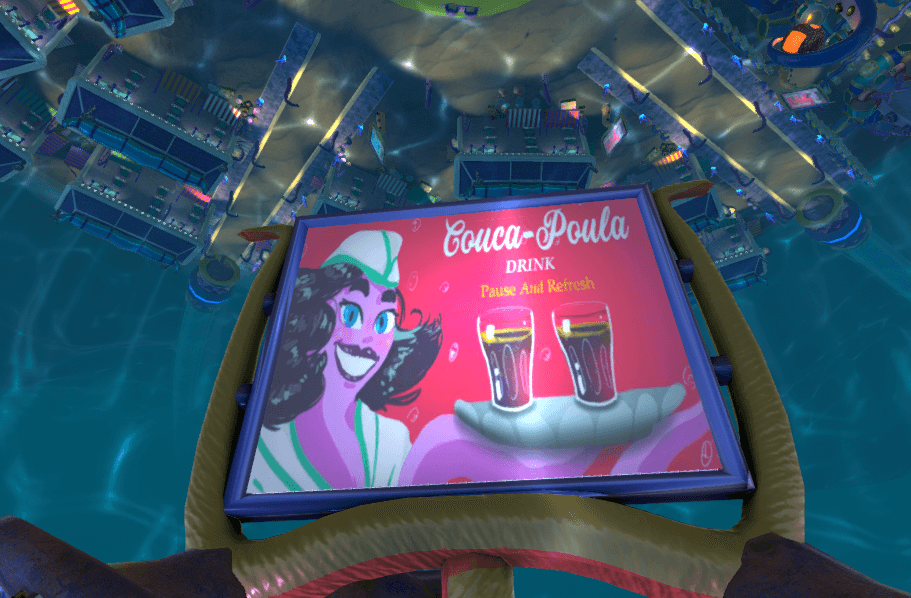
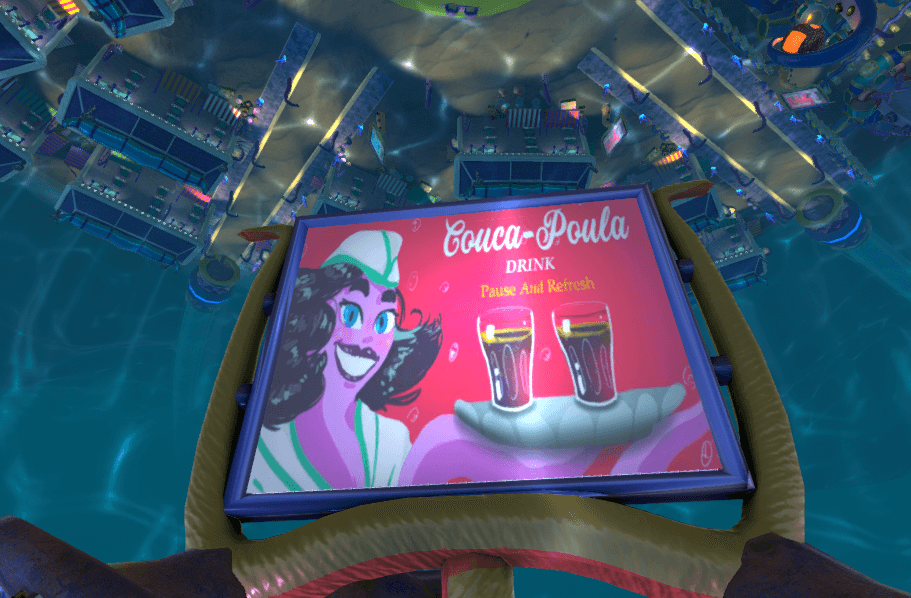
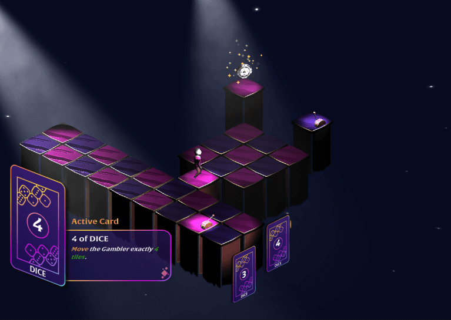
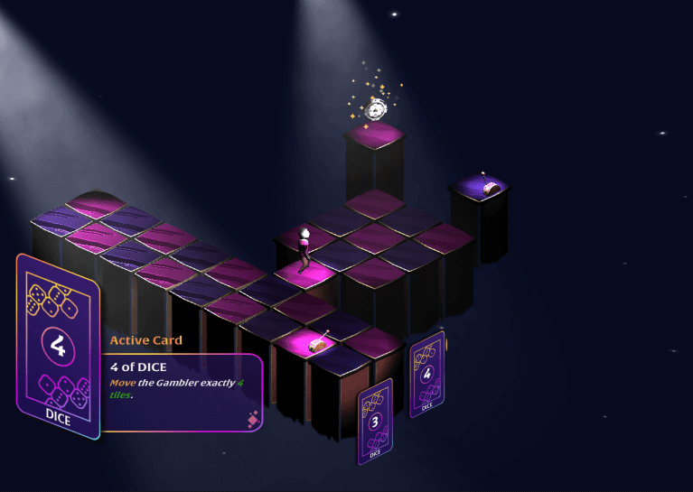

Bienvenue !
Contact

Pirate Chips
Soyez le plus patate des moussaillons et prenez part à cette bataille sans foi ni loi !
Formez des équipes, enfilez votre chapeau de pirate, construisez votre navire,
puis lancez-vous en mer, tout est permis : tirez au canon, donnez des coups de pagaie,
sautez sur le bateau ennemi pour le saboter ou naviguez à pleine vitesse pour l’enfoncer,
réparez ou reconstruisez votre bateau en pleine bataille, la liste est longue. Rien n’est figé,
tout peut être détruit… ou amélioré !
Un seul objectif : être le dernier des tubercules à flot.
Embarquez dans ce Couch Game délirant, et ce, dès les premières images,
n'attendez pas de lancer une partie pour régler les comptes, c'est ce que font les vrais pirates yar !
Prêt à jouer avec vos propres règles ?
Projet réalisé en quatre mois pour le DESS en Design de jeu à l’Université de Montréal
Tous : Designer de jeu
William Bourassa Bennett : Développeur
Justin Carrier : Développeur Rami Serhal : Designer de niveau, designer de son
Tom Bonnot : Chef de projet, artiste de jeu 3D
Merci aux externes qui ont aidé sur le projet :
Hélène Litzler : UI en jeu
Lauriane Paty : Artiste de jeu 3D
Léonard Ponthieu : Artiste VFX
Jean-François Kharrat : Animateur 3D
Zoé Martinez Salas : Compositeur
 

L'Empire Poulpoutou
Welcome to the Poulpoutou's Empire
Start a new adventure surrounded by squids and play as the Emperor's son to discover what's behind this cute and innocently scene.
Poulpougrad is the main city of this nation, a huge city protected from extern threats,
protecting utopia and happy lives. But, is it really like this ? Up to you to find out.
In a jazzy mood, feel free to interact with everyone and lead your own path.
Get in contact with a lot of personalities we have build up for this adventure.
The Emperor's Son is fed up with staying in his castle in the middle of this town, since his father doesn't want him to go outside the castle.
So he decides to leave and lead its way through the city, so his hangry father will send people to get him back.
You will have none lethal weapons created to fight, no one has to be killed is your way to do things.
Good Luck in Poulpougrad
It was a Student project we lead with Ludovic Gibault, me as the 3D Game Artist and Scrum Master and him as Lead Developper and Project Owner.
Yanis Ouglal : Concept Artist and 2D game Artist
Marine Capela : 3D Animator
Maxime Reninger : Scenarist
Lionel Bezamanifary : Dev
Hakim Loukil : Dev
Etienne Blachon & Hugo Caumon aka "Brothers" : Sound Designers/Compositor
Color Quest
Color Quest is a colorful, relaxing platformer-puzzle game, where you will have to solve every level around a limited access to your color space: Cyan, Magenta, and Yellow.
Your color filter can only display one color at a time, so memorizing which colors activate what and where, planning your moves and your color-switching will be the key !
Unique color-switch mechanic
Comprehensive Tutorial
3 Challenging levels to solve
Peaceful Ambiance
Play the POST-JAM version here, either from the browser or the download. We are actively working on the game , and you can expect weekly DevLogs !
And here is a word from our sponsor:
"Seriously Andrew, do I really have to say this bullsh*t ? What do you mean it’s 'on air' ?"
Oh, you’re there hehe !
I was just catching my breath before showing you this exceptional new technology.
We’ve all been facing difficulties with our printing machines, you know 'it misses colors' or 'this is not the same Color Space'.
Well don’t you worry, with this unique Color Space you will be able to join every Color Space you ever need, from CMYK to AdobeRGB or even sRGB (it doesn’t make sense please).
Before printing anything just go through our new technology and you will see your print going out in one and beautiful piece.
This is purely revolutionary, with few inputs you will have the best Black and White printing ever made...
Wait... Black and White Andrew you little Bas... You didn’t solve anything right ? Do you honestly think people will order this ?
What do you mean they’ve already pre ordered this ? This is bulls... oh my god thank the lord that many pre order.
Well, sorry, I thought you would be smarter than that but hey, that’s fine for me.
Gregory Largange : Developper
Élodie Vasseur : Level Designer
Tom Bonnot : 3D Artist
SAGE : l'art de ne pas l'être
- SAGE est un jeu créé à l'occasion de la Video Games Lab Gamejam 2021 -
Notre jeu rend hommage au frisson de l'arcade en mettant en scène des enfants pas très sages mais très joueurs, dans une salle d'arcade pleine de folie.
Chaque gamin veut se défouler sur trois jeux différents : à vous de lui proposer les bons jeux dans le bon ordre selon ce que chacun raconte.
Vous pourrez alors jouer à trois jeux : choisissez les bons jeux et vous pourrez accompagner les joueurs dans les petits jeux qui s'enchainent.
Attention : la difficulté sera croissante dans toutes les sessions de jeu !
Tous les personnages racontent leurs petites histoires. Parviendrez vous à les suivre jusqu'au bout ?
Ecoutez les préférences des joueurs pour choisir les bons jeux.
Les mini jeux se jouent avec la souris et le clavier.
Equipe :
Demaxis - Ludovic Gibault : Developpeur
Cortex : Graphiste 2D/UI Artist
Parfione - Jules Bliaut : Game Designer/Scénariste
Junn - Gaël Barbance : Sound Designer/Compositeur
Routard - Tom Bonnot : Graphiste 3D/Level Designer
Liam : Aide au développement
./gitignore le inteur

Gang Graine
Be ready, your turn has come and YOU are the disease !
In a very cute nonsense world where people have more cars than houses and are living on a 100m sized island without any plane or boat,
their tragic destiny is : YOU.
Yes, YOU. Just in case you didn’t get it, you will have to collect (in a very kind and gentle way, I'm not lying at all)
as many living entities as you can on this very island. But don’t wait too long to visit this beautiful place,
the clock is ticking and your life depends on theirs... It is them or you.
A gangrene is taking over you and if you don’t feed yourself up with human lives, it will kill you.
(Well, I guess that when you’re done with this island you will be killed anyway, but who knows ?)
You can destroy almost everything so have fun (before death) and find every statue, you will discover these people's weird culture.
And who are you to judge them ? Since you are terrifying them, you can enjoy your power while it lasts !
Since it's an arcade game, there is a score, but it’s hidden (we ran out of coffee),
so be the best among your friends !
See you on the world record and become the most terrific disease !
Key Binds :
WASD or ARROWS to move around
Left Click to divide yourself
Team :
Andoni Iturioz - Dev : https://ituriozandoni9.wixsite.com/portfolio
Valentin Denat - Dev : https://vdenat31.wixsite.com/portfolio
Aline Archidec - VFX Artist : https://www.artstation.com/aaylia
Tom Bonnot - Level Art and 3D Modeling : https://tombonnot.github.io/
 


WISP
Welcome to WISP!
Discover a luxurious casino which encloses many secrets. You’ll be accompanied by Wisp, a small and mysterious will-o’-the-wisp.
He will help you solve puzzles and find your tarots cards back, guiding you through the darkness of this place.
Let the gambling begin!
Controls: mouse
Gamejam's Team:
Yoann MAISONNEUVE: Unity Developer, Level Designer & Git Master https://github.com/YoannRodrigo/
Anthony CUTTIVET: Unity Developer https://anthonycuttivet.com/
Cyril GAJAN: Unity Developer
Quentin BAUDRY: Sound Designer
Hélène LITZLER: 2D Game Artist & UI/UX Designer https://www.instagram.com/_kir.art/
Tom BONNOT: 3D Gamed Artist https://tombonnotgraphist3d.github.io/


Dice Against The Vice
Don't you think you are the Dice.
No... no, actually you are the Vice but be careful, dices are always against us.
Protect your treasure from the dice's minions, they are trying to loot you off, helped by the sky falling dices.
Loot their gold and their dices, to stop them from taking your reward !
Change your class by taking a red Dice, 3 choice : Warrior, Mage and Ranger.
But I mean, a true Vice would keep that beautiful sword isn't it ?
Make the best Highscore and show who's the most evil person, take your revenge against those random dice from the other games,
like, who cares about loosing some Monopoly's dice huh ?
Show who your trully are !
Team :
Grégory Largange - Developpement and 3D Animation under Unity
Louis Desirant - Developpement and UX UI Artist
Tom Bonnot - 3D Artist and Level Artist
Thanks to Maxime for his help and some of the props.
Some 3D Props have been made before the Jam, but every one of them were made for a personnal project in the beginning of the year 2022.
Such a Nice Jam, thanks Game Maker Tool Kit